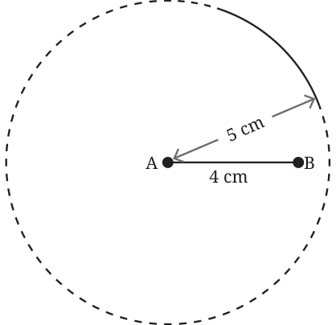
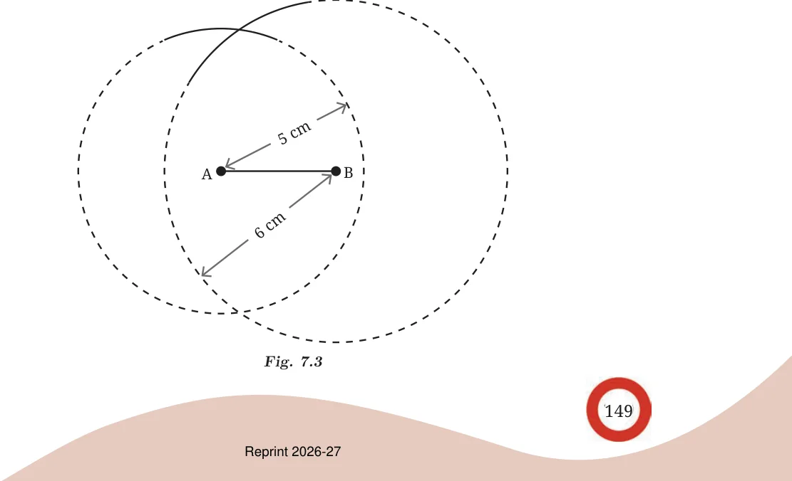
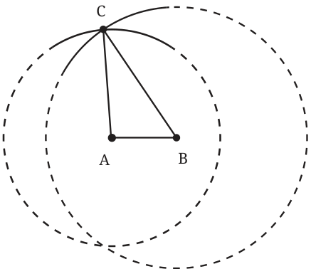

How do we construct triangles that are not equilateral?
Construct a triangle of sidelength 4 cm, 5 cm and 6 cm.
As in the previous case, this triangle can also be constructed using just a marked ruler. But it will involve several trials.
How do we construct this triangle more efficiently?
Choose one of the given lengths to be the base of the triangle: say 4 cm. Draw the base. Let A and B be the base vertices, and call the third vertex C. Let \(AC = 5\) cm and \(BC = 6\) cm.
Like we did in the case of equilateral triangles, let us first get all the points that are at a 5 cm distance from A. These points lie on the circle whose centre is A and has radius 5 cm. The point C must lie somewhere on this circle. How do we find it?

We will make use of the fact that the point C is 6 cm away from B. Construct an arc of radius 6 cm from B.

Fig. 7.3
The required point C is one of the points of intersection of the two circles.
The reason why the point of intersection is the third vertex is the same as for equilateral triangles. This point lies on both the circles. Hence its distance from A is the radius of the circle centred at A (5 cm) and its distance from B is the same as the radius of the circle centred at B (6 cm).
Let us summarise the steps of construction, noting that constructing full circles is not necessary to get the third vertex (see Fig. 7.2 and 7.3).
Step 1: Construct the base AB with one of the side lengths. Let us choose \(AB = 4\) cm (see Fig. 7.1).

Step 2: From A, construct a sufficiently long arc of radius 5 cm (see Fig. 7.2).
Step 3: From B, construct an arc of radius 6 cm such that it intersects the first arc (see Fig. 7.3).
Step 4: The point where both the arcs meet is the required third vertex C. Join AC and BC to get \(\triangle ABC\).